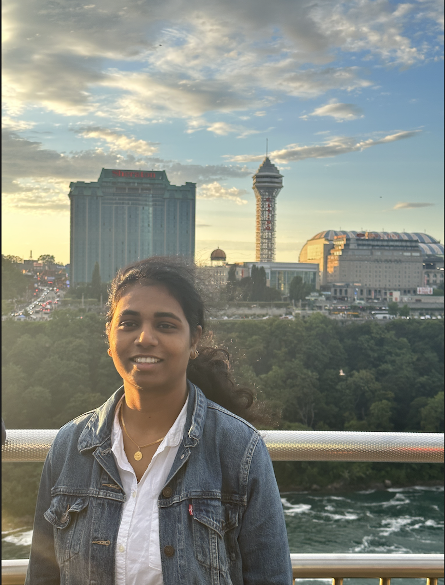

Intro
Starting as a software engineer, I found my passion for AI at conferences, pushing me to pursue a Master's in Data Science. Along the way, I've dived into diverse projects, enjoying the challenge of solving complex problems using different data structures—text, image, graphs, numbers.
Now, with experience and education in tow, I'm all set to explore the vast landscapes of AI, from machine learning to deep learning. It's not just about a career shift; it's my way of diving deep into the exciting world of tech.